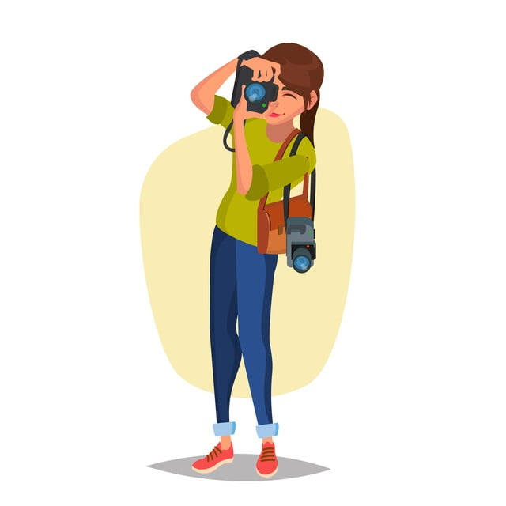
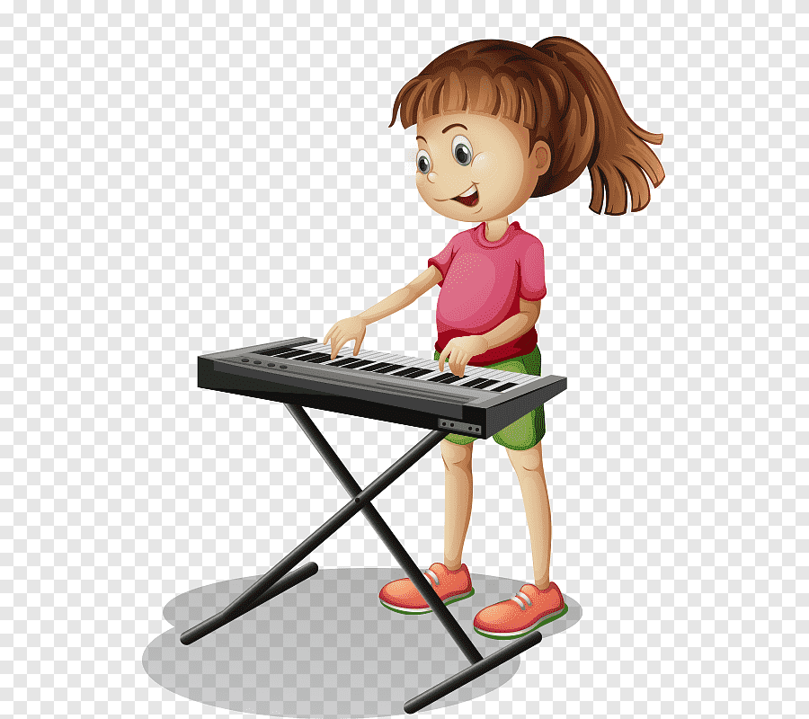

Saya memiliki latar belakang pemrograman karena saya merupakan lulusan dari Information System Universitas Surabaya
Saya ingin belajar programming karena saat ini teknologi berkembang sangat pesat dari waktu ke waktu. Sudah banyak teknologi-teknologi baru yang digunakan dalam kehidupan sehari-hari untuk memudahkan kegiatan dan pekerjaan manusia. Salah satu alasan saya ingin belajar pemrograman adalah agar saya dapat ikut serta dalam perkembangan teknologi tersebut. Di sisi lain, menurut saya pekerjaan di bidang IT memiliki peluang yang lebih besar di masa yang akan datang.
Tujuan saya setelah menyelesaikan program ini adalah saya bisa mendapatkan pengetahuan dan keterampilan dalam berbagai tools dan bahasa pemrograman yang dapat menunjang pekerjaan saya
Hobi dan Interest :
- Fotografi 
- Bermain musik 
- Traveling

Website yang sering saya kunjungi dan sukai :